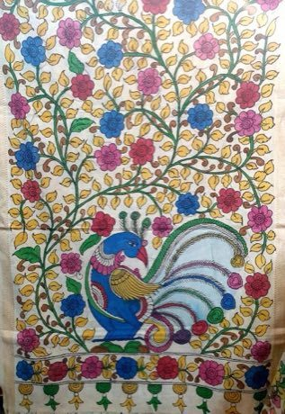

Home / Living Traditions / Shared across the world
Playable heritage gameKalamkari pen painting
Also known as కలంకారి
Kalamkari means pen work: a flowering vine is drawn on cotton cloth with a split bamboo or reed pen dipped in dark ink, then petals and leaves are filled with plant dyes such as madder red, mustard, indigo and green.

How to play
- Look at the framed cloth: it shows the finished vine.
- Tap the dark ink to load the pen, then press and drag along the lit guide. Go slowly for a bold line; the line thins as the ink runs low, so dip again.
- Press Next, then tap each petal and leaf with a dye to flood it. The colour spreads from your tap and stops at the pen outline.
- Mirror is on, so each stroke is repeated on the other half of the cloth. Switch it off to draw both sides yourself, then press Check.
Rules at a glance
- The work has two steps: first the outline with the pen, then the dye fills.
- The pen holds a limited load of ink; a dry pen lays no line, so dip it again.
- A line scores by how closely it follows the guide; a fill scores by how much of the shape holds the right dye.
- With Mirror on, the cloth is judged for how evenly both halves are painted.
- Paint that lands outside the outline counts against you. Undo takes back the last stroke.
- Three stars for a close, even, well-coloured cloth.
About the tradition
Kalamkari is a cloth-painting craft of Andhra Pradesh and Telangana in India, made in two main styles: freehand pen drawing and block printing. Cloth is prepared with natural mordants and each dye is applied and washed in its own stage; families of painters keep the work alive today.
Origins
A living tradition passed from person to person; it is not tied to a single dated origin.
Credits
- Photo: Ravitheja Kumar Reddy C, CC BY-SA 4.0, Wikimedia Commons
- Photo: Ravitheja Kumar Reddy C, CC BY-SA 4.0, source on Wikimedia Commons
- Text: CC BY-SA 4.0, World Heritage Games.
Sources

Get the app
Kalamkari pen painting is one of 8 folk paintings in the Folk Painting of the World app for Android. Live on Google Play. One app, many traditions, no account needed.
More games to play

Malagasy lamba silk weaving
Worldwide · Crafts and makingPlay preview · in the Textile Crafts of the World app
Botswana coil basket weaving
Worldwide · Crafts and makingPlay preview · in the Basketry & Straw of the World app


Backstrap loom weaving
Worldwide · Crafts and makingPlay preview · in the Looms & Bands of the World app